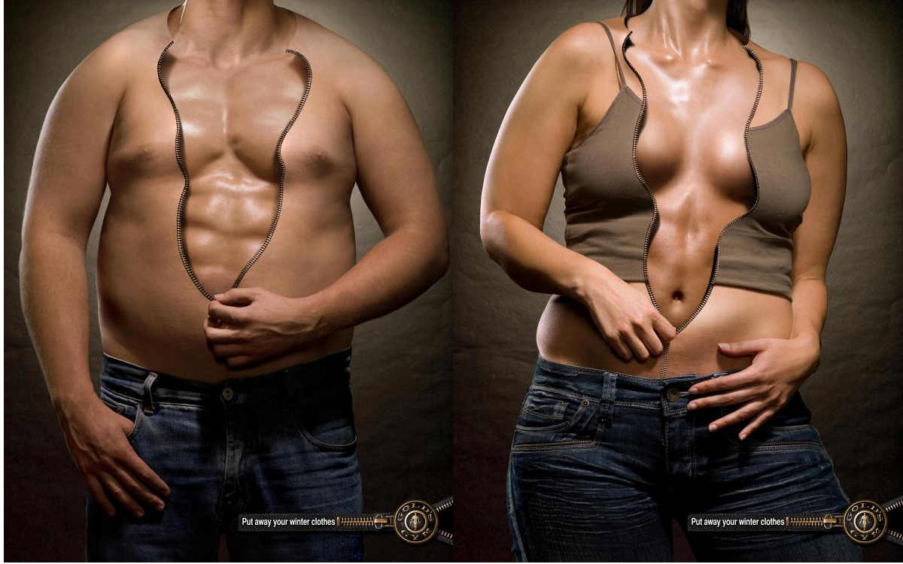

Mitos de los cuerpos perfectos
Antes del verano, nuestros complejos se disparan frente a la idea de conseguir un cuerpo perfecto. Pero, ¿a qué se corresponde esa idea? ¿realmente existen los cuerpos perfectos o son sólo una respuesta a convicciones culturales pasajeras?
Cuerpos atléticos, muslos firmes, abdomen plano, pieles tersas y bronceadas… todos tenemos en la cabeza una idea más o menos preconcebida de lo que significa tener un cuerpo perfecto para lucir en verano.
Sin embargo, esta idea también es subjetiva, ya que estereotipo de cuerpo perfecto varía según la época y la cultura a la que pertenezcamos. Podría decirse que, con el tiempo, no sólo el pensamiento cambia: también cambian la idea sobre el estereotipo de belleza comúnmente aceptado.
En la cultura egipcia, por ejemplo, la ide de un cuerpo perfecto se asociaba a un cuerpo esbelto, con hombros estrechos, cintura fina y cara simétrica. Unos siglos después, en la Grecia Antigua, lo que se perseguía era la armonía y la proporción de las formas, además de una piel pálida, una estructura robusta y unos pómulos redondeados.